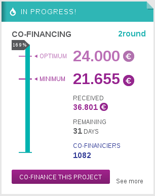
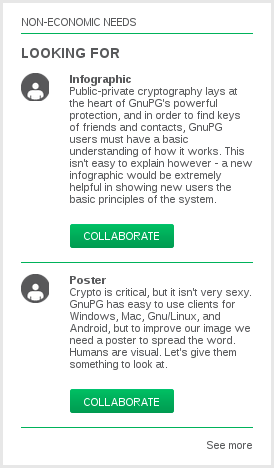
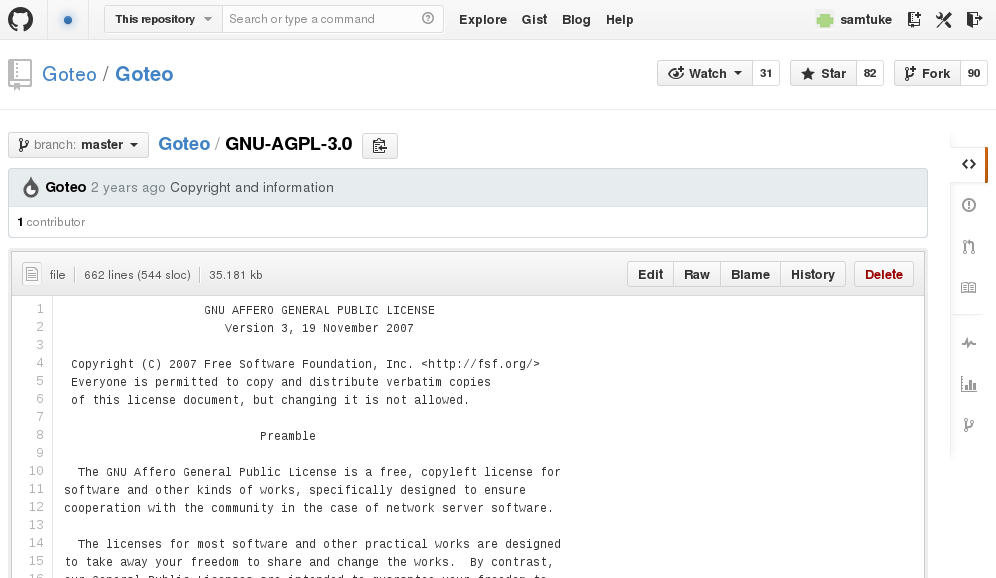
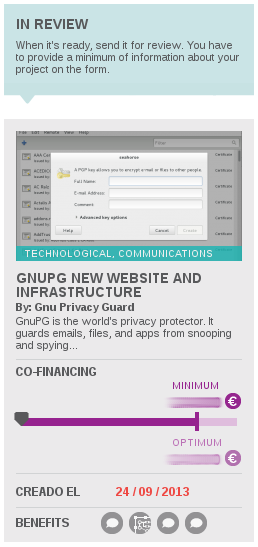
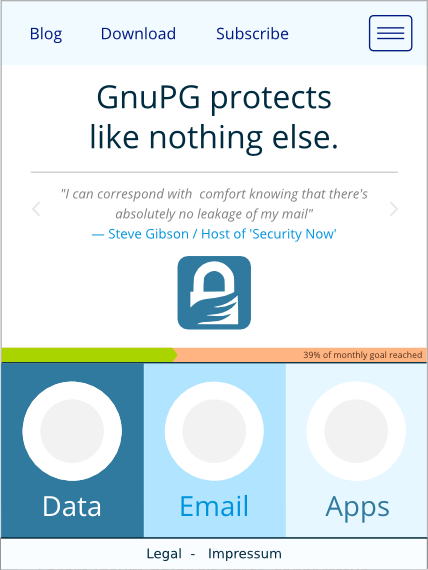
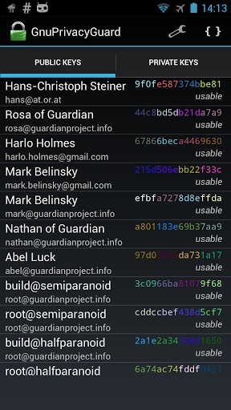

GnuPG Blog
Goteo Campaign: Preliminary Results
Posted May 12, 2014 by Werner
Here is a quick campaign status update: After the t-shirts arrived as
expected the week after Eastern, Mechthilde, Michael, Penny, Rainer,
and me met the other day at the FSFE office in Düsseldorf. Due to
Rainer’s excellent preparation we quickly folded, enveloped, and
stamped about 300 t-shirts and snailed them. Kudos to them for
helping with this task. There are still a few t-shirts we have not
been able to sent because some of our contributors did not reply to
several mails asking for missing address details, or the postmaster
returned them due to faulty addresses. If you expected a t-shirt and
did not receive one, please contact me at accounts at GnuPG dot net.
Most of the stickers have also been snailed but a few are still
pending due to uncertain addresses.
The main GnuPG site is now
accessible via TLS and plain http access is redirected to the https
address. Strict Transport Security (HSTS) has also been enabled.
In the case of problems with TLS the site may still be accessed
non-encrypted via
http://www.tla-friendly.gnupg.org.
To accomplish another promise of the campaign, the website may now be
accessed as TOR hidden service at
http://ic6au7wa3f6naxjq.onion. Being
a well known and intentionally public site, it does not make much
sense to have it as a hidden service. However, if the site is to be
accessed anyway via Tor we can avoid the extra TLS layer and and
allow direct access. Note that lists.gnupg.org and some other
services are not available via an onion address.
Finally here are preliminary financial results of the campaign:
Our contributors donated a total of 37270 Euro. Due to card and
Paypal processing problems we actually received 36732 Euro. The
preliminary costs for running the campaign are 18590 Euros, so
that 18142 Euro are available for the goals. Here is an overview
of the costs:
| Goteo fee |
2939 |
| Paypal fees |
1152 |
| VAT |
5212 |
| Campaign manager |
5390 |
| 300 t-shirts |
1852 |
| Envelopes + postage t-shirts |
996 |
| Rewards for helper |
102 |
| 360 Stickers |
342 |
| Envelopes + postage sticker |
210 |
| Campaign server for 5 months |
395 |
| |
18590 |
Due to missing or incomplete addresses or no response to our mails
we could not ship about 80 stickers and 15 t-shirts. I spend a
substantial amount of time (at least 4 weeks) with direct campaign
related tasks, which were not included in the original plan. That
plan explained how to spend the money:
| New website |
4054 |
| New content |
910 |
| New website design |
1435 |
| Releasing 2.1 |
6000 |
| |
12399 |
The extra 5743 Euro we received will be used for general
maintenance, to cover the unexpected time I had to spend on the
campaign, and for some giveaways to long time GnuPG hackers.
Thank you very much for all your help and please keep on
supporting GnuPG.
Mission complete: campaign ends, closing stats
Posted 6th February 2014 by Sam Tuke

Today's donation totals
After 50 days of crowdfunding, the GnuPG campaign for new website and infrastructure will close tomorrow. That means rewards for backers can now be ordered and preparations for dispatch can begin. Here are the results so far:
- 36.741 EUR raised out of 24.000 target
- 1.081 people donated in support
- 350 EUR Largest single donation
- 33 EUR average donation
- 365 Stickers claimed
- 300 T-shirts claimed
- 191 GnuPG email addresses claimed
- 793 Additional Twitter followers (from 60)
Goteo, the Free Software platform hosting the campaign, usually required two 40 day rounds of funding, but in our case we're ending early, after just 50 days. This will enable us to deliver the new site and GnuPG 2.1 faster, and is possible thanks to reaching our goal so quickly (in just 26 hours).
We're currently preparing a system for collecting donor preferences for their rewards (sizes, addresses, etc.), so expect to be contacted in the next week or two if that includes you.
Thanks again to all our backers for the overwhelming support that GnuPG has received!
Find us at FOSDEM
Posted 27th January 2014 by Sam Tuke
On Friday Werner and Sam are heading to FOSDEM, the largest Free Software conference in Europe, along with many GnuPG hackers, users, and supporters. Get in touch if you'd like to talk about the existing or future campaigns while we're there.
There won't be a GnuPG booth this year, but we shall be busy with meetings and mingling. Notes and contacts for us can be left at the FSFE booth.
And don't forget that you're invited to the continent's biggest keysigning party, organised by FOSDEM volunteers. Today is the last opportunity to submit your key, which is necessary for participation. Get to it!
Bring your ideas. See you there.
How good is Goteo? An appraisal
Posted 30th December 2013 by Sam Tuke

A wall of donor faces on Goteo
"One question: why did you choose the quite unknown Spanish crowdfunding site Goteo?" So shot back the reply to the press release I had just sent to a few dozen selected journalists announcing the launch of the GnuPG crowdfunding campaign. "You won't get any exposure on there, we got a few hundred thousand hits just from being on indiegogo" I was told by one experienced crowdfunder at my favourite Berlin hackerspace last month. "What's Goteo?" has been one of the most frequently asked questions of this campaign from friends and supporters.
I ummed and ahhed over which crowfunding platform to choose. It's a decision that has a huge impact on the campaign - market exposure, transaction costs, and design and layout are just a few of the many factors that have to be taken into account. This is a crowded market - new crowdfunding sites are popping up each week as more companies try to cash in on what is recognised a key tech trend of 2013. An estimated $5bn was raised by crowdfunders this year. That equates to around $35m in commission fees for the platforms hosting these campaigns, who typically charge between 5-10%. It's no surprise that everyone wants a slice.

"Non-economic donations"
Goteo however, is unique. Right now it's the only crowdfunding software that is itself Free Software, allowing everyone to inspect how it works and run their own copy. Even though I don't plan to run my own Kickstarter competitor any time soon, the fact we can check its code, make improvements, and follow the development process is really important. I want Goteo to prosper profitably because, aside from all its other good points, I know some of that profit will be invested in the platform itself, which shall remain free and accessible to everyone under the terms of the AGPL3 license.
Goteo is also the only such site to my knowledge that's built with public money. Funded by Spain's Department for Education, Culture and Sport, Barcelona's City Council, and The University of Andalucia, Goteo exists to host projects which "contribute to the common good, free knowledge, and open code". Everything about the platform and the projects it hosts point to common goods, shared resources, and collaborative effort.
Besides that, these other features make it stand out:
- Signup and donation workflow is smooth and simple
- Great focus on social media and sharing links (we had hundreds of tweets from these)
- Users can login with many social networks, including OpenID and LinkedIn
- Clean and professional design with easy access to key information
- Built in license chooser for all "goods" projects produce (categories for software, artwork, etc.)
- Mandatory delivery timeframe / deadline setter with public calendar
- Nice "image wall widget" of donors faces has potential, provides public recognition of donations
- Web forms for project creation are comprehensive and well designed
- Crowdsourcing of extra skills ("non-economic donations") works well
- Donations are guaranteed by PayPal and Goteo, not pledged or retractable
- Goteo staff are friendly and knowledgable, providing personal guidance and assistance
- Many funding successes, including a few related to hardware, software, and Hackerspaces
Many of those benefits are obvious before launching a campaign. However, on the list of problems I experienced with the platform, most weren't discovered until the point of execution ( orange = fix in progress):
- User-set passwords are automatically emailed in plain text after registration (insecure)
- Rewards can't be customised, e.g. select t-shirt size
- Once a campaign is launched, no aspect can be edited directly (though news can be added)
- The order of images for the campaign page is random - the first image visitors see can't be specified
- The launch date of the campaign is chosen by Goteo administrators, it can't be specified
- No markup is available for text formatting
- Pictures are limited and can't be placed between text to break up the page
- There's a bug that causes double posting of news items
- Shipping for rewards is not configurable - international shipping can't be billed
- The website is not mobile friendly (minimum page width is 940px)
- HTTPS is not available to donors for transferring personal details
Besides that, I spotted a few opportunities for improvement:
- Send emails to people who didn't complete their donation ("abandoned carts" - indiegogo does this)
- Allow managers to specify the content of social media messages

Goteo's license on GitHub
Some of the problems listed are a real pain. Because I couldn't choose the launch date, and hadn't planned for an in-depth human review by Goteo, our project went public days later than I expected, at a time when I was travelling and without connectivity. Goteo's campaigns team is helpful and responsive however, and even in the last few weeks several translation problems have been fixed which I had previously reported. I'm confident that the other most serious issues will be addressed in a timely manner.
In all, we took a gamble by using Goteo, but one that paid off. It's focus on communal work and rewards is unique amongst its competitors, and when it comes to copyleft licensing they stand alone in practicing what they preach. Nearly all the convenient features that you'd expect from more established platforms are included, together with a pleasant functional interface. Donations are worry-free for both donors and recipients (though I can't comment on the final transfer process until later next month).
Best of all perhaps, staff at Goteo are knowledgable and supportive and have time to invest in making projects a success. And when launch day comes and you're expecting the unexpected, that's very reassuring.
16 Years of protecting privacy
Posted 20th December 2013 by Sam Tuke
Today marks 16 years since the first release of GNU Privacy Guard
(GnuPG). In that time the project has grown from being a hacker’s
hobby into one of the world’s most critical anti-surveillance
tools. Today GnuPG stands at the front line of the battle between
invasive surveillance and civil liberties.
“Time has proven Free Software to be the most trustworthy defender
against companies and governments seeking to undermine citizen
privacy” said Werner Koch, GnuPG Founder and Lead Developer. “Although
funding our work has not always been easy, the need for universally
accessible privacy tools has never been more apparent”.
Some of the world’s top security specialists are now counted among
GnuPG users, including Bruce Schneier, Jacob Appelbaum, and Phil
Zimmerman, inventor of PGP. This summer the world learned of the
extent of Government spying thanks to whistleblowers and journalists
communicating using GnuPG encrypted emails. Market leading servers
from Red Hat and Debian have built their reputation for security on
the foundation of GnuPG-verified software.
“The success of GnuPG’s
first crowdfunding campaign, which received 90% of it’s target in 24
hours, shows a fresh willingness among users to support GnuPG in it’s
16th year, and points to new opportunities for the project in future”
said Sam Tuke, GnuPG Campaign Manager. “The release of GnuPG 2.1 and
the launch of a newly designed website later this year will bring
GnuPG and its clients for Windows, Mac, Gnu/Linux, and Android to new
audiences”.
Over the years GnuPG has kept up to date with new algorithms, such as
Elliptic Curve Cryptography, and reactive to new threats, such as key
extraction via acoustic monitoring, which was announced two days ago
by researchers as GnuPG updates were released, in coordination with
developers. Members remain confident of the future of GnuPG and look
forward to facing the privacy threats of tomorrow with community
support.
Press release: GnuPG encryption project launches crowdfunding
campaign
Posted 19th December 2013 by Sam Tuke
Today GNU Privacy Guard (GnuPG) has launched its first
crowdfunding campaign with the aim of building a new
website and long term infrastructure. The 24.000 EUR target will
fund:
- Fresh web interfaces for gnupg.org including mobile
- Completion and release of GnuPG 2.1
- Anonymous Tor network access to the website
- A new user friendly download page suitable for all devices
- A new server for web services
- New pages convening external guides, videos, and handbooks
- Facilities for processing recurring donations for long
term project support
Project founder and Lead Developer Werner Koch said “GnuPG has
seen a huge upsurge in popularity following recent state
spying revelations. After 16 years of continuous development,
we are now asking for community support to capitalise on
consumer demand for privacy, and make GnuPG easy to access for
mainstream audiences”.
GnuPG is one of the few tools remaining above suspicion in the
wake of leaked NSA documents. Edward Snowden and his contacts
including Bruce Schneier switched to GnuPG when they began handling
the secret
documents earlier
this year. The Wall Street Journal, The Committee to Protect
Journalists,
and ProPublica
have all embraced GnuPG for protection of staff and sources. Phil
Zimmermann, original inventor of Pretty Good Privacy (PGP), has also
moved to GnuPG in wake of the news.
“GnuPG is a key part of modern privacy infrastructure” said
Sam Tuke, Campaign Manager, GnuPG. “Millions of users rely on
GnuPG to work securely on servers, laptops and smartphones,
but 2013 donations totaling 3.000 EUR to date have not even
covered fixed costs. Supporting new algorithms like elliptical
curve and fixing newfound exploits fast takes a lot of work
which is done voluntarily. Now is the time for people to
contribute to making GnuPG slick and more sustainable in
future”.
Jacob Appelbaum, Tor Project developer, added “GnuPG is
important - it allows us the assurances we need to do our
work. Community funding is a critical part of a confident
outlook for GnuPG in future.”
For further information, please contact Sam Tuke.
Email: samtuke [at] gnupg.org
Phone: +49 176 81923811
About GNU Privacy Guard
GnuPG is a leading cryptography app that protects emails and
data from interception. It is developed by a community of Free
Software engineers led by Werner Koch. GnuPG is used and
recommended by the world’s top security experts, including
Bruce Schneier and Phil Zimmermann. It offers best in class
privacy free of charge and restriction. Hundreds of companies
have integrated GnuPG into their products to perform mission
critical security, including Red Hat, Deutsche Bahn, and many
others.
http://gnupg.org
Getting Goteo approval
Posted 18th December 2013 by Sam Tuke

Pending project on Goteo
The targets are set, the rewards are prepared, the press release
has been edited and translated, and now we’re waiting for
approval from the crowdfunding
platform Goteo.
Goteo is like indiegogo, but more forward thinking. It has a
special focus on communal benefits and rewards - projects that
benefit society as a whole, not just project donors (though they
can get special rewards too).
Every ’good’ produced by a campaign on Goteo, be it artwork,
software, event, or manufactured product, has a license assigned
to it, like GPL or Creative Commons, and as well as asking for
money, projects ask for other forms of help called “non-economic
needs”, like translations or product
testing. Goteo’s own
source code is Free Software too, meaning anyone can run
their own Goteo crowdfunding server. That’s the feature that
swung our decision to use it for GnuPG.
Because the type of project on Goteo is quite specific
however, the acceptance phase of launching crowdfunding is
taking us longer than expected. Right now we’re working with
Goteo’s small team to answer questions which aren’t on the
webforms you fill out when you design your project with their
system.
I’m hoping to provide what’s necesasry and get acceptance
quickly. As soon as we have it the crowdfunding will launch
and newsletter subscribers
and Twitter followers
will be the first to know.
Speedups in Libgcrypt 1.6
Posted 15 December 2013 by Werner Koch
[...] To check how the forthcoming version 1.6.0 of Libgcrypt
compares to the older 1.5 version of Libgcrypt, I did some benchmarks
using a Thinkpad X220 which features an i5-2410M processor at 2.3GHz
running a 64 bit Debian Wheezy.
{more}
Preparing for launch
Posted 13th December 2013 by Sam Tuke
Mid December, giving season, and nearly time for the GnuPG
Crowdfunding to commence. We've been working hard on
preparations. Drafts of the new mobile website design have been published and met positive feedback, and a community-contibuted
promo video was posted on YouTube. GnuPG coverage on Twitter
continues to grow with many articles
(The
Guardian, Kaspersky
Labs, The
EFF, Lifehacker,
...) and 252 new followers in 6 weeks.
Click here
to view the video on YouTube. [embedded video
removed on 2014-04-28 due to privacy issues]

New mobile site draft
Last Friday I announced the crowdfunding to a crowded audience at
Berlin event
"Whatever
happened to privacy", and Markus Beckedahl
(Netzpolitik)
and Jacob
Appelbaum (Tor Project and Wikileaks) amplified the importance
of supporting the project. Hugo Roy (FSFE) gave a talk on Wednesday
about the campaign at the Paris
'Hackadon' - a new conference for
Free Software giving, organised by three
crowdfunding
organisations. His slides are online in the
GPG presentations
repository.
Hopefully the crowdfunding page on Goteo (a Free Software
Kickstarter) will be ready for launch next week. Email me if you can
help with translating the press release - we're aiming for at least
three languages. And don't forget you can still sign up for email
updates (form below). Thanks for all your support so far!
[Subscribe code with references to external sites removed
on 2014-04-28 due to privacy issues.]
Friends tell friends they love GnuPG
Posted 13th November 2013 by Sam Tuke

GnuPG can run almost anywhere
Email encryption is one of those pleasures that can't be enjoyed
alone. Sending yourself messages secured with 4096-bit RSA is great
for proof of concept, but meaningful communication requires two
parties. GnuPG requires both those parties to have their own
keys.
Less than 1% of all email
traffic is PGP encrypted, meaning that those of us who do make our
messages private routinely find ourselves in the frustrating
predicament of having to share our thoughts insecurely, even though
we know they're being intercepted, even though this is easily
avoidable, and even though we've already taken steps to do so. All
because our friends and colleagues don't know the
benefits of GnuPG.
Windows, Gnu/Linux, Mac, and Android all have point and click
GnuPG interfaces - at this point, all bases except iPhone are more
or less covered. That means the reason your contacts aren't OpenPGP
ready is not technical. And because GnuPG is Free
Software (and free of charge), it can't be about price.
A recommendation from you is the most effective way you can
increase the number of GnuPG users, and consequently increase the
percentage of the messages you send that are meaningfully
encrypted. That's why we're asking people in our community to think
of pithy explanations of why GnuPG is important and how it enables
them.
We've already got quotes from some big names like Bruce Schneier,
Jacob Appelbaum, and Richard Stallman. But the chances are
that your name carries more weight among your
peers. Please use it to share your appreciation for GnuPG!
If you use social networks, you can
use #iloveGPG to connect your messages to other
people's, and make is easier for us to find and repeat them.
Look out for weekly quotes posted from the
GnuPG Twitter
and Diaspora
accounts if you need inspiration. Let's fill up
the keyservers
with fresh keys from new users!
Securing the future of GPG
Posted 5th November 2013 by Sam Tuke
If you've noticed some changes around here, there's a good reason
why. We have a plan for securing the long term stability of GnuPG
development by giving more to our users, and asking more from them
in return.
You already know that GnuPG is important, and as months of fresh
government spying revelations go by, it's becoming obvious that
GnuPG is one of the very few tools that can still be trusted to keep
our data safe from the overwhelming efforts of international law
enforcement. But developing GnuPG takes work - regular monitoring
for newfound threats and exploits, and new features to keep it sharp
with the latest encryption algorithms. We also need to reach out to
the millions of potential GnuPG users who are asking themselves how
they can make their email secure. Public-private key cryptography
hasn't yet gained mainstream acceptance, but it could if it were
just a little more appealing and accessible.
To maintain progress within the project we need to make it easier
for GnuPG users to support the work that we do. Ours is an app that
is often hidden from view, relied upon daily by hundreds of
thousands of people, often in life-threatening circumstances, yet
low profile and rarely supported by publicity or donations.
To change that we're going to launch a new
website with a fresh design, more friendly and accessible
information, and new resources to grow and strengthen our user
group. The new site will also allow the project to accept and manage
new forms of financial support, including automatic subscriptions to
sustain development long term.
Designing, building and populating the new site will take a few
months, and in order to cover the costs there will be
a crowd-funding campaign with a modest target, in
early December. We have some rewards up our sleeves for those who
donate.
When that time comes, we'll need your help -
telling your contacts, forwarding the announcement to your
communities, and contributing financially if you can.
You can subscribe to updates about the campaign using this
form. This is separate to other GnuPG mailing lists - update will be
sent here, and only here.
[Subscribe code with references to external sites removed
on 2014-04-28 due to privacy issues.]
New blog, first post
Posted 30th October 2013 by Sam Tuke
Welcome to Gnu Privacy Guard's new blog! We're planning some
major changes to gnupg.org and how the project communicates in
general. I'm Sam, and I'll be writing updates here as our work
progresses. In future this blog will be replaced with a more
beautiful and featureful alternative, but bear with us as we get
from here to there.
For more timely updates you can follow our Twitter
accounts: @GnuPrivacyGuard
and @GnuPG.
That's right, we have two! But I'm going to combine them shortly so
it's easier to keep track [UPDATE: accounts now merged!
Stick with @GnuPG].
For more information, see
our press
contact page hosted on Totem. That's all for now.
|
{kind=link}